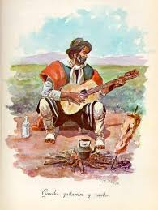
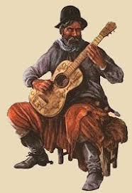
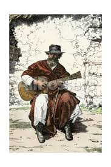

Se mueve de pueblo en pueblo cantando historias, muchas veces propias.
El bardo del campo, cronista oral de hazañas, tragedias y vidas gauchescas.
Mezcla poesía con crónica, historia con sentimiento.
Su figura representa la cultura oral del campo y la sensibilidad artística del gaucho.
Genera como una identidad nacional y a través de él la gente se mantiene informada.
Era perseguido por los grupos de poder porque era muy crítico, criticaba las injusticias de la ciudad.


